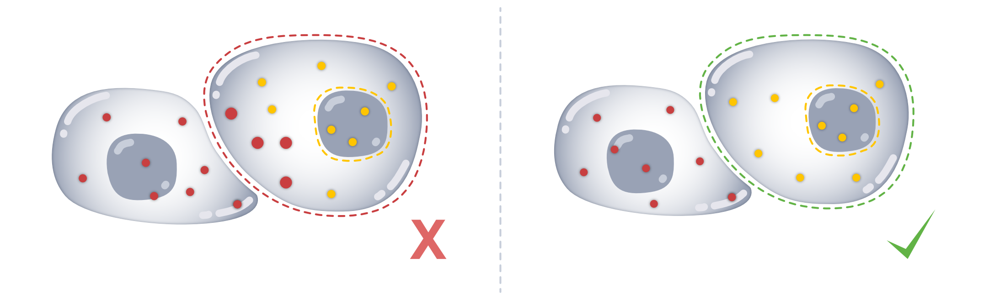
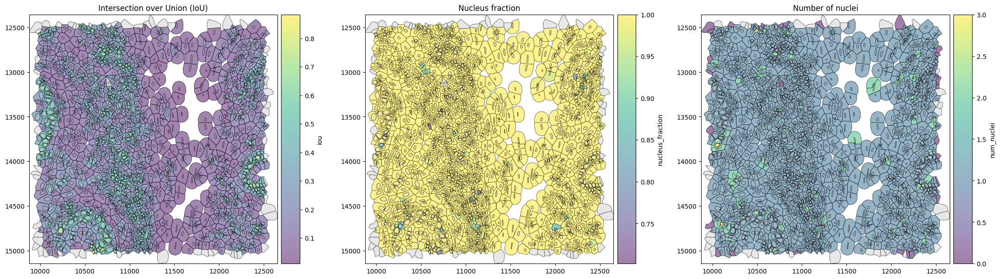
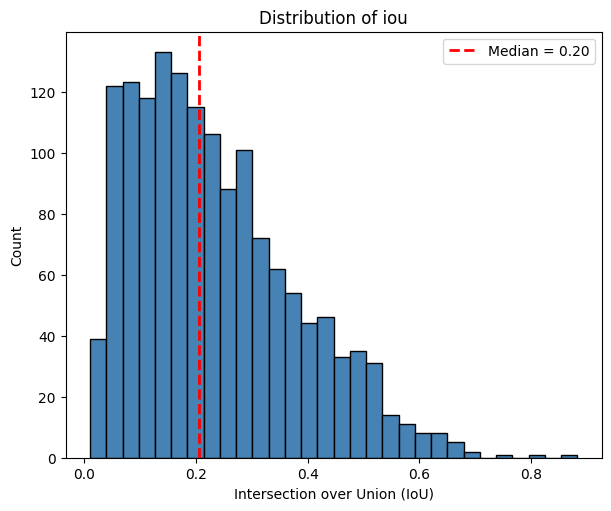
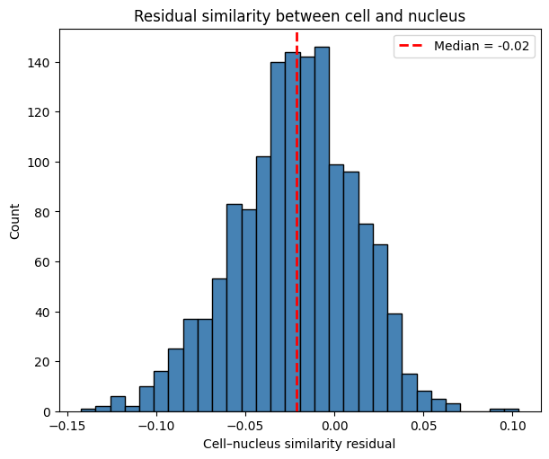
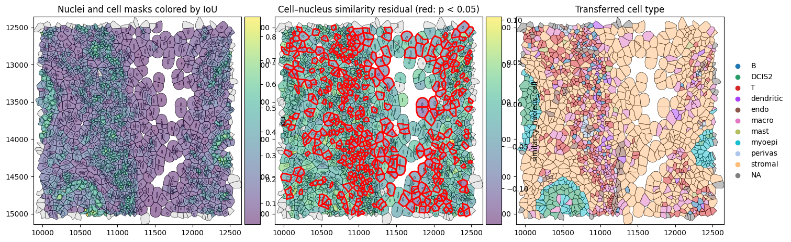
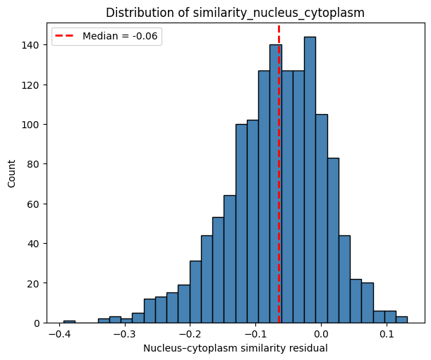
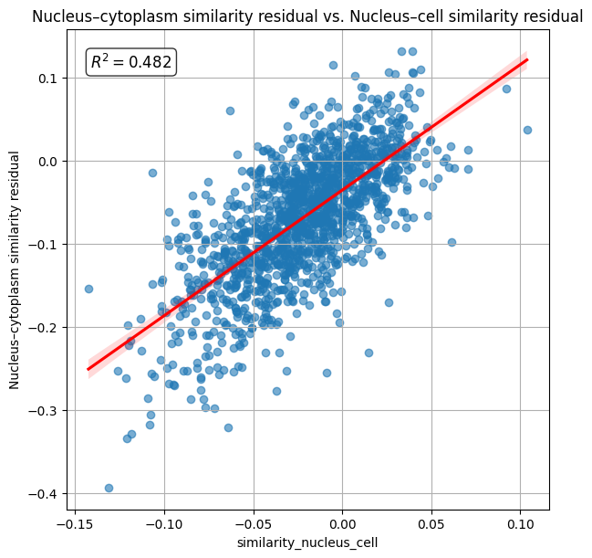
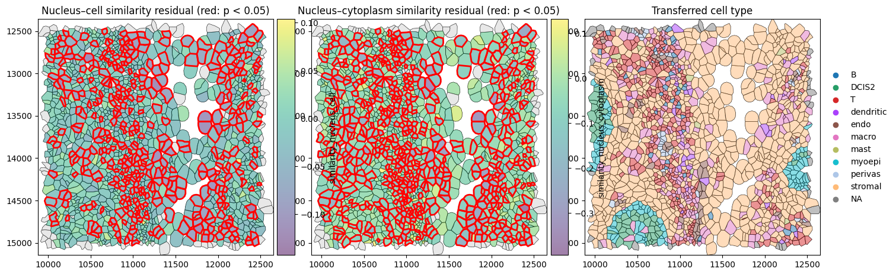
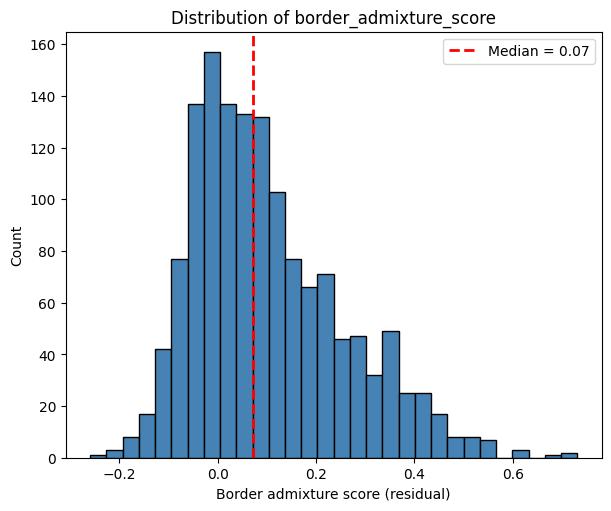
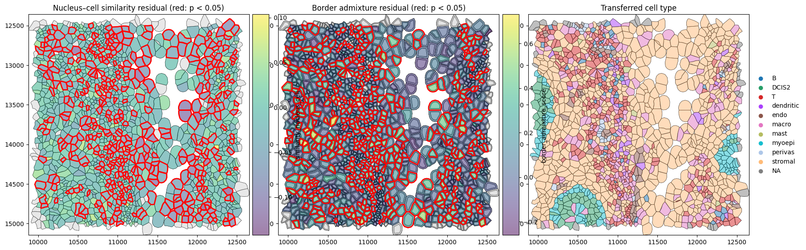

Module: Region Similarity#
Assuming that transcripts are homogeneously distributed throughout the cell, we expect there to be similar expression of genes in the nucleus and in the rest of the cell. If this is not the case, it can be indicative of transcript spillover from adjacent cells.

The region similarity (rs) module compares transcript composition between different subcellular regions to identify cells with unexpected spatial differences in expression.
Because profiles with fewer transcripts are inherently more variable and therefore tend to appear less similar even when sampled from the same underlying expression profile, SegTraQ accounts for this finite-count effect using a permutation-based expectation. The reported scores measure similarity relative to this expectation: values around zero indicate the expected level of similarity, negative values indicate lower similarity than expected, and positive values indicate higher similarity than expected. The accompanying p-value identifies cells with unusually low similarity.
To follow along with this tutorial, you can download the data from here.
[1]:
%load_ext autoreload
%autoreload 2
[2]:
import anndata as ad
import matplotlib.pyplot as plt
import numpy as np
import seaborn as sns
import spatialdata as sd
import spatialdata_plot # noqa
from scipy.stats import linregress
import segtraq
segtraq.settings.n_jobs = -1 # Use all available CPU cores
/g/huber/users/lazic/src/SegTraQ/.venv/lib/python3.13/site-packages/tqdm/auto.py:21: TqdmWarning: IProgress not found. Please update jupyter and ipywidgets. See https://ipywidgets.readthedocs.io/en/stable/user_install.html
from .autonotebook import tqdm as notebook_tqdm
Helpers#
[3]:
# helper functions for plotting
def plot_histogram(
df,
column,
bins=30,
figsize=(6, 5),
color="steelblue",
edgecolor="black",
show_median=True,
median_kwargs=None,
median_color="red",
title=None,
xlabel=None,
ylabel="Count",
ax=None,
):
values = df[column].dropna()
median_value = np.median(values)
if ax is None:
fig, ax = plt.subplots(figsize=figsize, constrained_layout=True)
ax.hist(values, bins=bins, color=color, edgecolor=edgecolor)
if show_median:
median_kwargs = median_kwargs or {}
ax.axvline(
median_value,
linestyle="--",
linewidth=2,
color=median_color,
label=f"Median = {median_value:.2f}",
**median_kwargs,
)
ax.legend()
ax.set_title(title or f"Distribution of {column}")
ax.set_xlabel(xlabel or column)
ax.set_ylabel(ylabel)
plt.show()
def plot_regression(
df,
x,
y,
figsize=(6, 6),
dropna=True,
ci=95,
scatter_kws=None,
line_kws=None,
title=None,
xlabel=None,
ylabel=None,
r2_loc=(0.05, 0.95),
r2_fmt="{:.3f}",
ax=None,
):
data = df[[x, y]]
if dropna:
data = data.dropna()
# Regression stats
slope, intercept, r_value, p_value, std_err = linregress(data[x], data[y])
r_squared = r_value**2
if ax is None:
fig, ax = plt.subplots(figsize=figsize, constrained_layout=True)
scatter_kws = scatter_kws or {"alpha": 0.6}
line_kws = line_kws or {"color": "red"}
sns.regplot(
data=data,
x=x,
y=y,
ci=ci,
scatter_kws=scatter_kws,
line_kws=line_kws,
ax=ax,
)
# R² annotation
ax.text(
r2_loc[0],
r2_loc[1],
rf"$R^2 = {r2_fmt.format(r_squared)}$",
transform=ax.transAxes,
verticalalignment="top",
fontsize=12,
bbox=dict(boxstyle="round,pad=0.3", facecolor="white", alpha=0.8),
)
ax.set_xlabel(xlabel or x)
ax.set_ylabel(ylabel or y)
ax.set_title(title or f"{y} vs. {x}")
ax.grid(True)
plt.show()
We start out by loading the data into a SegTraQ object.
[4]:
sdata = sd.read_zarr("../../data/xenium_v1_data/sdata_xenium_crop.zarr/")
st = segtraq.SegTraQ(
sdata,
tables_centroid_x_key=None,
tables_centroid_y_key=None,
points_background_id=-1, # "UNASSIGNED" for Xenium prime
)
st.sdata
/g/huber/users/lazic/src/SegTraQ/src/segtraq/SegTraQ.py:162: RuntimeWarning: No centroids specified for tables. Centroids will be automatically computed from shapes.
validate_spatialdata(
/g/huber/users/lazic/src/SegTraQ/src/segtraq/SegTraQ.py:190: UserWarning: Filtering control and low-quality transcripts from the SpatialData object in-place. Set filter_kwargs={'inplace': False} to avoid modifying the original object.
sdata_new = _filter_control_and_low_quality_transcripts(
/g/huber/users/lazic/src/SegTraQ/src/segtraq/SegTraQ.py:190: RuntimeWarning: Cell IDs differ between assigned transcript points and the expression table. 0 cells occur only in points (e.g. []), and 14 occur only in the table (e.g. [np.int32(94563), np.int32(77508), np.int32(95363), np.int32(77512), np.int32(76683)]). Please check that the transcript assignments and `filter_kwargs` are consistent with how the expression table was generated.
sdata_new = _filter_control_and_low_quality_transcripts(
[4]:
SpatialData object, with associated Zarr store: /g/huber/projects/CODEX/segtraq/data/20260204_SegTraQ_sdata/xenium_v1_data/sdata_xenium_crop.zarr
├── Images
│ └── 'morphology_focus': DataTree[cyx] (1, 2500, 2500), (1, 1250, 1250), (1, 625, 625), (1, 313, 313), (1, 156, 156)
├── Points
│ └── 'transcripts': DataFrame with shape: (<Delayed>, 8) (3D points)
├── Shapes
│ ├── 'cell_boundaries': GeoDataFrame shape: (1563, 1) (2D shapes)
│ └── 'nucleus_boundaries': GeoDataFrame shape: (1501, 1) (2D shapes)
└── Tables
└── 'table': AnnData (1563, 313)
with coordinate systems:
▸ 'global', with elements:
morphology_focus (Images), transcripts (Points), cell_boundaries (Shapes), nucleus_boundaries (Shapes)
We can optionally transfer cell-type labels from a scRNA-seq reference. These labels are not required to compute the region_similarity metrics, but help interpret them—for example, by assessing whether low similarity is more common at boundaries between different cell types.
[5]:
adata_ref = ad.read_h5ad("../../data/xenium_5K_data/BC_scRNAseq_Janesick.h5ad")
st.run_label_transfer(adata_ref, ref_cell_type="celltype_major", ref_raw_counts_layer="raw", inplace=True)
As you can see, the spatialdatadataset contains cell and nuclear masks as shapes. It is important that you have a nuclear segmentation in your object, otherwise you will not be able to compute the metrics below.
Intersection over Union between cell and nucleus masks#
First, we match each cell to its most overlapping nucleus using match_nuclei_to_cells() and quantify the overlap using the Intersection over Union (iou) and nucleus_fraction, the fraction of the nucleus area covered by the cell. These measures can highlight poor morphological segmentation: oversegmented cells may cover only part of a nucleus, resulting in a low nucleus_fraction, whereas undersegmented cells may extend far beyond the nucleus, resulting in a low iou.
[6]:
results_df = st.rs.match_nuclei_to_cells()
results_df.head()
[6]:
| cell_id | nucleus_id | iou | nucleus_fraction | |
|---|---|---|---|---|
| 0 | 6327 | 6327.0 | 0.051420 | 1.0 |
| 1 | 6328 | 6328.0 | 0.064608 | 1.0 |
| 2 | 6330 | 6330.0 | 0.047572 | 1.0 |
| 3 | 6331 | 6331.0 | 0.042835 | 1.0 |
| 4 | 6332 | 6332.0 | 0.041484 | 1.0 |
For each cell_id, we obtain the ID (nucleus_id) of the nucleus mask with the highest nucleus_fraction. If a cell does not overlap with any nucleus, the function returns a missing value for nucleus_id. If the nucleus has an invalid geometry, iou and nucleus_fraction are reported as NA.
Let’s see what this looks like when we plot the iou and nucleus_fraction spatially.
[7]:
# link annotations with cell boundaries
st.sdata.tables[st.tables_key].obs["region"] = st.shapes_key
st.sdata.set_table_annotates_spatialelement(st.tables_key, region=st.shapes_key)
fig, axes = plt.subplots(1, 2, figsize=(12, 6), constrained_layout=True)
# IoU
st.sdata.pl.render_shapes(
element=st.shapes_key,
color="iou",
cmap="viridis",
fill_alpha=0.5,
outline_alpha=1.0,
outline_width=0.5,
outline_color="black",
).pl.render_shapes(
element=st.nucleus_shapes_key,
fill_alpha=0.2,
outline_alpha=1.0,
outline_width=0.5,
outline_color="black",
).pl.show(
ax=axes[0],
title="Intersection over Union (IoU)",
colorbar=True,
)
# Nucleus fraction
st.sdata.pl.render_shapes(
element=st.shapes_key,
color="nucleus_fraction",
cmap="viridis",
fill_alpha=0.5,
outline_alpha=1.0,
outline_width=0.5,
outline_color="black",
).pl.render_shapes(
element=st.nucleus_shapes_key,
fill_alpha=0.2,
outline_alpha=1.0,
outline_width=0.5,
outline_color="black",
).pl.show(
ax=axes[1],
title="Nucleus fraction",
colorbar=True,
)
plt.show()
WARNING render_shapes: Found 64 NaN values in color data. These observations will be colored with the 'na_color'.
WARNING render_shapes: Found 64 NaN values in color data. These observations will be colored with the 'na_color'.

Since the legacy Xenium segmentation algorithm generates cell masks by expanding nuclear boundaries, most cells have a nucleus_fraction close to 1.
We can now investigate what the distribution of IoUs looks like.
[8]:
plot_histogram(
df=sdata[st.tables_key].obs,
column="iou",
xlabel="Intersection over Union (IoU)",
)

Expression similarity between cell and nucleus#
While IoU and nucleus_fraction assess whether the cell and nucleus are morphologically well matched, similarity_nucleus_cell() asks whether they are also molecularly consistent. It compares the transcript composition of the whole cell with that of its matched nucleus and determines whether they are less similar than expected given their transcript counts and overlap. For transcript-informed segmentation methods the whole cell may also include transcripts beyond morphological boundaries.
A negative residual indicates unexpectedly different transcript compositions, which can arise, for example, when transcripts from neighboring cells are incorrectly assigned to the cell or when transcripts from the cell are incorrectly excluded, even if the cell and nucleus boundaries appear well matched.
[9]:
nucleus_cell_df = st.rs.similarity_nucleus_cell()
[10]:
plot_histogram(
df=sdata[st.tables_key].obs,
column="similarity_nucleus_cell",
title="Residual similarity between cell and nucleus",
xlabel="Cell–nucleus similarity residual",
)

We can visualize the similarity residual spatially to identify cells whose nucleus and whole-cell transcript profiles are less similar than expected. The residual indicates the magnitude of this difference, while the p-value indicates how strongly the data support it. Cells with both a negative residual and a low p-value therefore provide the strongest evidence for unexpectedly different nucleus–cell transcript composition.
[11]:
obs = sdata.tables[st.tables_key].obs
# Get significant cell IDs
significant_ids = obs.loc[
obs["similarity_nucleus_cell_p_value"] < 0.05,
st.tables_cell_id_key,
]
# Create a temporary shapes element containing only significant cells
sdata.shapes["significant_cells"] = (
sdata.shapes[st.shapes_key].loc[sdata.shapes[st.shapes_key].index.isin(significant_ids)].copy()
)
# plot
fig, ax = plt.subplots(1, 3, figsize=(15, 5), constrained_layout=True)
# IoU
sdata.pl.render_shapes(
element=st.nucleus_shapes_key,
fill_alpha=0.2,
outline_alpha=1.0,
outline_width=0.5,
outline_color="black",
).pl.render_shapes(
element=st.shapes_key,
color="iou",
cmap="viridis",
fill_alpha=0.5,
outline_alpha=1.0,
outline_width=0.5,
outline_color="black",
).pl.show(
ax=ax[0],
title="Nuclei and cell masks colored by IoU",
colorbar=True,
)
# Cell–nucleus similarity residual
sdata.pl.render_shapes(
element=st.nucleus_shapes_key,
fill_alpha=0.2,
outline_alpha=1.0,
outline_width=0.5,
outline_color="black",
).pl.render_shapes(
element=st.shapes_key,
color="similarity_nucleus_cell",
cmap="viridis",
fill_alpha=0.5,
outline_alpha=1.0,
outline_width=0.5,
outline_color="black",
).pl.render_shapes(
element="significant_cells",
fill_alpha=0.0,
outline_alpha=1.0,
outline_width=2.0,
outline_color="red",
).pl.show(
ax=ax[1],
title="Cell–nucleus similarity residual (red: p < 0.05)",
colorbar=True,
)
# Transferred cell type
sdata.pl.render_shapes(
element=st.shapes_key,
color="transferred_cell_type",
fill_alpha=0.5,
outline_alpha=1.0,
outline_width=0.5,
outline_color="black",
na_color="gray",
).pl.show(
ax=ax[2],
title="Transferred cell type",
colorbar=False,
)
plt.show()
WARNING render_shapes: Found 64 NaN values in color data. These observations will be colored with the 'na_color'.
WARNING render_shapes: Found 127 NaN values in color data. These observations will be colored with the 'na_color'.

Similarity between nucleus and cytoplasm#
Because nuclear transcripts are part of the whole-cell profile, nucleus–cell similarity is partly driven by transcripts shared between the two profiles. We therefore also compare the nucleus with the remaining non-nuclear part of the cell (referred to here as the cytoplasm).
While similarity_nucleus_cell evaluates whether the final cell-level expression profile is molecularly consistent with its matched nucleus, similarity_nucleus_cytoplasm provides a more direct comparison of transcript composition between the two compartments. Low residual values may indicate transcript misassignment or contamination, but can also reflect genuine subcellular RNA localization.
[12]:
nuc_cyto_df = st.rs.similarity_nucleus_cytoplasm()
nuc_cyto_df.head()
[12]:
| cell_id | nucleus_id | iou | nucleus_fraction | similarity_nucleus_cytoplasm | similarity_nucleus_cytoplasm_p_value | |
|---|---|---|---|---|---|---|
| 0 | 6327 | 6327.0 | 0.051420 | 1.0 | -0.149144 | 0.004975 |
| 1 | 6328 | 6328.0 | 0.064608 | 1.0 | -0.032734 | 0.248756 |
| 2 | 6330 | 6330.0 | 0.047572 | 1.0 | -0.090591 | 0.024876 |
| 3 | 6331 | 6331.0 | 0.042835 | 1.0 | -0.066339 | 0.054726 |
| 4 | 6332 | 6332.0 | 0.041484 | 1.0 | -0.043669 | 0.149254 |
The histogram below shows the distribution of nucleus–cytoplasm similarity residuals. For most cells, the observed similarity is close to that expected under the null model.
[13]:
plot_histogram(
df=sdata[st.tables_key].obs,
column="similarity_nucleus_cytoplasm",
xlabel="Nucleus–cytoplasm similarity residual",
)

We can look at the correlation between the similarity_nucleus_cell and similarity_nucleus_cytoplasm. As expected, similarity_nucleus_cell and similarity_nucleus_cytoplasm are strongly correlated, as both capture molecular differences between the nucleus and the rest of the cell. They can diverge when the nucleus contributes strongly to the whole-cell profile: even if nucleus and cytoplasm differ substantially, the whole-cell profile may remain similar to the nucleus because it
contains the nuclear transcripts themselves.
[14]:
plot_regression(
df=sdata[st.tables_key].obs,
x="similarity_nucleus_cell",
y="similarity_nucleus_cytoplasm",
title="Nucleus–cytoplasm similarity residual vs. Nucleus–cell similarity residual",
ylabel="Nucleus–cytoplasm similarity residual",
)

Let’s visualize this in a spatial plot.
[15]:
obs = sdata.tables[st.tables_key].obs
# Get significant cell IDs for each similarity metric
significant_nucleus_cell_ids = obs.loc[
obs["similarity_nucleus_cell_p_value"] < 0.05,
st.tables_cell_id_key,
]
significant_nucleus_cytoplasm_ids = obs.loc[
obs["similarity_nucleus_cytoplasm_p_value"] < 0.05,
st.tables_cell_id_key,
]
# Create temporary shapes elements containing only significant cells
sdata.shapes["significant_nucleus_cell"] = (
sdata.shapes[st.shapes_key].loc[sdata.shapes[st.shapes_key].index.isin(significant_nucleus_cell_ids)].copy()
)
sdata.shapes["significant_nucleus_cytoplasm"] = (
sdata.shapes[st.shapes_key].loc[sdata.shapes[st.shapes_key].index.isin(significant_nucleus_cytoplasm_ids)].copy()
)
# Plot
fig, ax = plt.subplots(1, 3, figsize=(15, 5), constrained_layout=True)
# Cell–nucleus similarity residual
sdata.pl.render_shapes(
element=st.shapes_key,
color="similarity_nucleus_cell",
cmap="viridis",
fill_alpha=0.5,
outline_alpha=1.0,
outline_width=0.5,
outline_color="black",
).pl.render_shapes(
element="significant_nucleus_cell",
fill_alpha=0.0,
outline_alpha=1.0,
outline_width=2.0,
outline_color="red",
).pl.show(
ax=ax[0],
title="Nucleus–cell similarity residual (red: p < 0.05)",
colorbar=True,
)
# Nucleus–cytoplasm similarity residual
sdata.pl.render_shapes(
element=st.shapes_key,
color="similarity_nucleus_cytoplasm",
cmap="viridis",
fill_alpha=0.5,
outline_alpha=1.0,
outline_width=0.5,
outline_color="black",
).pl.render_shapes(
element="significant_nucleus_cytoplasm",
fill_alpha=0.0,
outline_alpha=1.0,
outline_width=2.0,
outline_color="red",
).pl.show(
ax=ax[1],
title="Nucleus–cytoplasm similarity residual (red: p < 0.05)",
colorbar=True,
)
# Transferred cell type
sdata.pl.render_shapes(
element=st.shapes_key,
color="transferred_cell_type",
fill_alpha=0.5,
outline_alpha=1.0,
outline_width=0.5,
outline_color="black",
na_color="gray",
).pl.show(
ax=ax[2],
title="Transferred cell type",
colorbar=False,
)
plt.show()
WARNING render_shapes: Found 127 NaN values in color data. These observations will be colored with the 'na_color'.
WARNING render_shapes: Found 143 NaN values in color data. These observations will be colored with the 'na_color'.

We observe more cells with significantly reduced similarity_nucleus_cytoplasm than similarity_nucleus_cell, particularly in regions with heterogeneous cell-type composition.
Border admixture score#
A cell’s border can differ from its center for many reasons, including genuine intracellular RNA localization. Therefore, low center–border similarity alone does not show that neighboring cells contributed to that difference.
The border_admixture_score() tests this more directly by asking whether the border is better explained as a mixture of the cell center and its neighborhood:
The observed admixture score measures how much better this mixture explains the border compared with the center alone. Because some apparent admixture can arise simply from finite transcript sampling, SegTraQ subtracts the mean score expected under a permutation null. The reported border_admixture_score therefore reflects excess neighborhood-like admixture beyond what is expected by chance.
Values around zero are close to the null expectation, while positive residuals indicate stronger neighborhood contribution than expected. The accompanying upper-tail p-value identifies cells with unusually strong admixture.
[16]:
st.rs.border_admixture_score()
[16]:
| cell_id | border_admixture_score | border_admixture_p_value | |
|---|---|---|---|
| 0 | 6327 | 0.149936 | 0.069652 |
| 1 | 6328 | 0.252905 | 0.024876 |
| 2 | 6330 | -0.117952 | 0.925373 |
| 3 | 6331 | 0.390063 | 0.004975 |
| 4 | 6332 | 0.024209 | 0.368159 |
| ... | ... | ... | ... |
| 1557 | 95953 | 0.428372 | 0.004975 |
| 1558 | 95954 | 0.235525 | 0.004975 |
| 1559 | 95955 | 0.003808 | 0.293532 |
| 1560 | 95959 | 0.187398 | 0.029851 |
| 1561 | 95960 | 0.182119 | 0.024876 |
1562 rows × 3 columns
The histogram below shows the distribution of the border_admixture_score.
[17]:
plot_histogram(
df=sdata[st.tables_key].obs,
column="border_admixture_score",
xlabel="Border admixture score (residual)",
)

[18]:
obs = sdata.tables[st.tables_key].obs
# Get significant cell IDs for nucleus-cell similarity
significant_nucleus_cell_ids = obs.loc[
obs["similarity_nucleus_cell_p_value"] < 0.05,
st.tables_cell_id_key,
]
# Get significant cell IDs for border admixture
significant_border_admixture_ids = obs.loc[
obs["border_admixture_p_value"] < 0.05,
st.tables_cell_id_key,
]
# Create temporary shapes elements containing significant cells
sdata.shapes["significant_nucleus_cell"] = (
sdata.shapes[st.shapes_key].loc[sdata.shapes[st.shapes_key].index.isin(significant_nucleus_cell_ids)].copy()
)
sdata.shapes["significant_border_admixture"] = (
sdata.shapes[st.shapes_key].loc[sdata.shapes[st.shapes_key].index.isin(significant_border_admixture_ids)].copy()
)
# Link annotations with cell boundaries
obs["region"] = st.shapes_key
sdata.set_table_annotates_spatialelement(
st.tables_key,
region=st.shapes_key,
)
# Plot
fig, axes = plt.subplots(
1,
3,
figsize=(18, 6),
constrained_layout=True,
)
# 1. Nucleus-cell similarity residual
sdata.pl.render_shapes(
element=st.shapes_key,
color="similarity_nucleus_cell",
cmap="viridis",
fill_alpha=0.5,
outline_alpha=1.0,
outline_width=0.5,
outline_color="black",
).pl.render_shapes(
element="significant_nucleus_cell",
fill_alpha=0.0,
outline_alpha=1.0,
outline_width=2.0,
outline_color="red",
).pl.show(
ax=axes[0],
title="Nucleus–cell similarity residual (red: p < 0.05)",
colorbar=True,
)
# 2. Border admixture residual
sdata.pl.render_shapes(
element="cell_centers",
fill_alpha=0.2,
outline_alpha=1.0,
outline_width=0.5,
outline_color="black",
).pl.render_shapes(
element="cell_borders",
fill_alpha=0.2,
outline_alpha=1.0,
outline_width=0.5,
outline_color="black",
).pl.render_shapes(
element=st.shapes_key,
color="border_admixture_score",
cmap="viridis",
fill_alpha=0.5,
outline_alpha=1.0,
outline_width=0.5,
outline_color="black",
).pl.render_shapes(
element="significant_border_admixture",
fill_alpha=0.0,
outline_alpha=1.0,
outline_width=2.0,
outline_color="red",
).pl.show(
ax=axes[1],
title="Border admixture residual (red: p < 0.05)",
colorbar=True,
)
# 3. Transferred cell type
sdata.pl.render_shapes(
element=st.shapes_key,
color="transferred_cell_type",
fill_alpha=0.5,
outline_alpha=1.0,
outline_width=0.5,
outline_color="black",
na_color="gray",
).pl.show(
ax=axes[2],
title="Transferred cell type",
colorbar=False,
)
plt.show()
WARNING render_shapes: Found 127 NaN values in color data. These observations will be colored with the 'na_color'.
WARNING render_shapes: Found 132 NaN values in color data. These observations will be colored with the 'na_color'.

For convenience, SegTraQ also provides a wrapper to run all region_similarity metrics.
[19]:
sdata = sd.read_zarr("../../data/xenium_v1_data/sdata_xenium_crop.zarr/")
st = segtraq.SegTraQ(
sdata,
tables_centroid_x_key=None,
tables_centroid_y_key=None,
points_background_id=-1, # "UNASSIGNED" for Xenium prime
)
st.run_region_similarity()
st.sdata.tables[st.tables_key].obs.columns
[19]:
Index(['cell_id', 'transcript_counts', 'control_probe_counts',
'control_codeword_counts', 'total_counts', 'cell_area', 'nucleus_area',
'region', 'centroid_x', 'centroid_y', 'similarity_nucleus_cell',
'similarity_nucleus_cell_p_value', 'nucleus_id', 'iou',
'nucleus_fraction', 'similarity_nucleus_cytoplasm',
'similarity_nucleus_cytoplasm_p_value', 'border_admixture_score',
'border_admixture_p_value'],
dtype='object')
Session Info#
[20]:
print(sd.__version__) # spatialdata
print(spatialdata_plot.__version__)
0.8.0
0.4.0
[ ]: